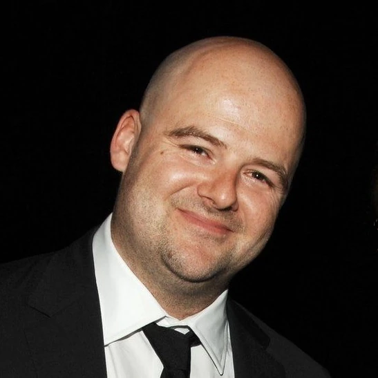
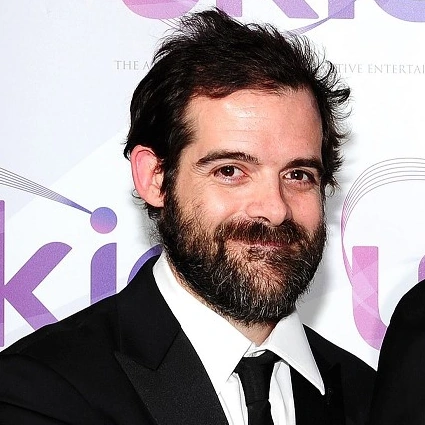
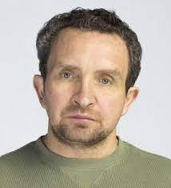

Dan Houser, é um produtor e escritor britânico de vídeo-jogos e co-fundador, juntamente com o seu irmão Sam Houser, da Rockstar Games.
Sam Houser é um produtor de jogos eletrônicos. É co-fundador e presidente da Rockstar Games e uma das forças criativas por trás de jogos como a franquia Grand Theft Auto, sendo produtor desde o terceiro jogo.
Terry Donovan co-fundou a Rockstar Games junto com os irmãos Houser , Sam e Dan. Donovan foi vice-presidente de marketing da Take-Two de junho de 1999 até dezembro de 2006.
